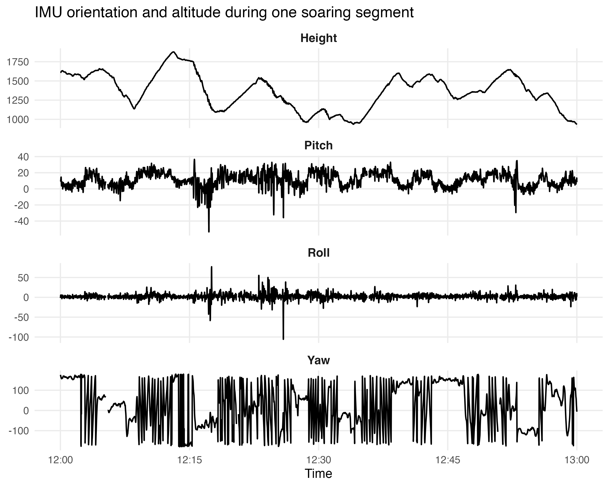

Golden Eagle Photos


A data-driven visualization project exploring eagle flight motion through 3D reconstruction, trajectory analysis, and visual storytelling.
View Repository .scroll-arrow { position: absolute; bottom: 30px; left: 50%; transform: translateX(-50%); font-size: 4rem; color: white; opacity: 0.9; animation: bounce 1.5s infinite; }We transform high-resolution bio-logging data into a dynamic 3D visualization of golden eagle flight. By combining GPS, accelerometer, gyroscope, and magnetometer data, we reconstruct real flight trajectories and body orientation.
The result is an interactive system that maps pitch, roll, and yaw onto a 3D eagle model, enabling a deeper understanding of flight dynamics and animal behavior.
This plot shows the recorded altitude and IMU-based orientation (pitch, roll, yaw) of the eagle over time during a soaring flight segment.

High-resolution bio-logging data is collected from GPS, accelerometer, gyroscope, and magnetometer sensors.
Raw sensor data is cleaned, synchronized, and transformed to extract orientation information.
Pitch, roll, and yaw are computed to reconstruct the eagle’s body orientation over time.
The reconstructed motion is mapped onto a 3D eagle model to generate an intuitive and dynamic flight visualization.
Visualization of reconstructed eagle motion (preview).